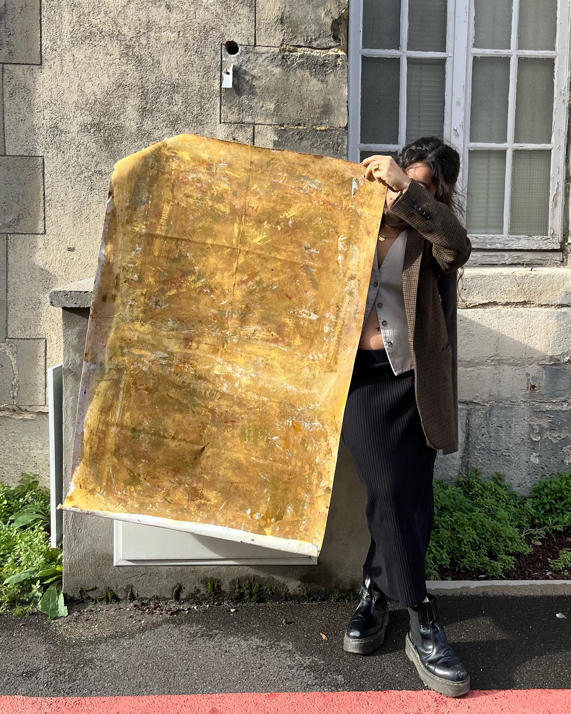
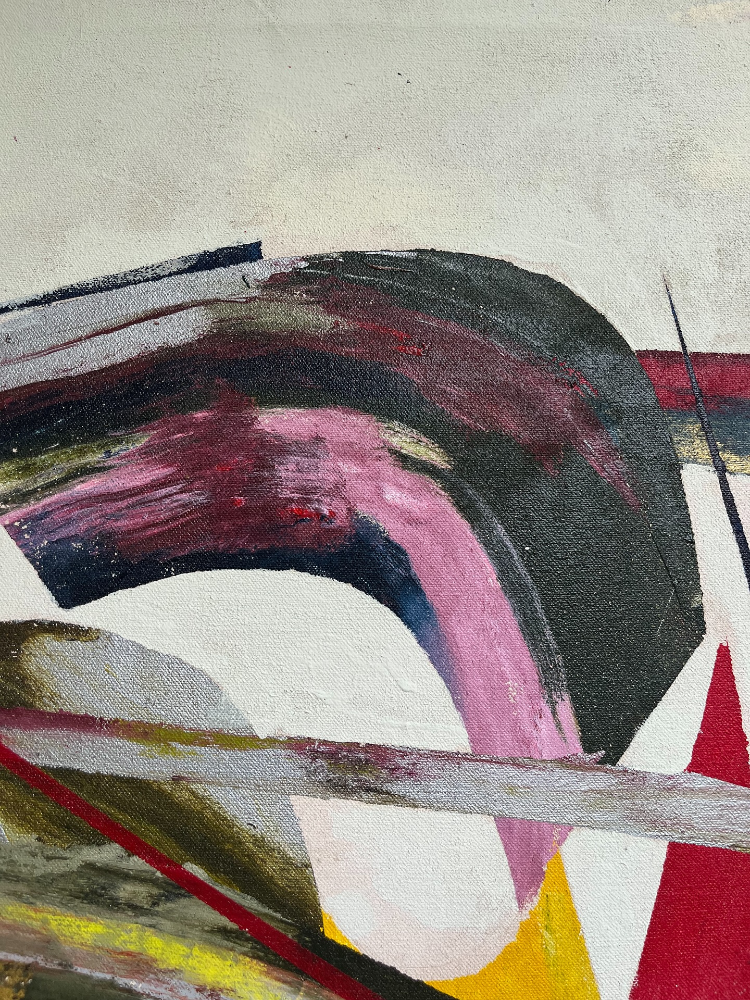
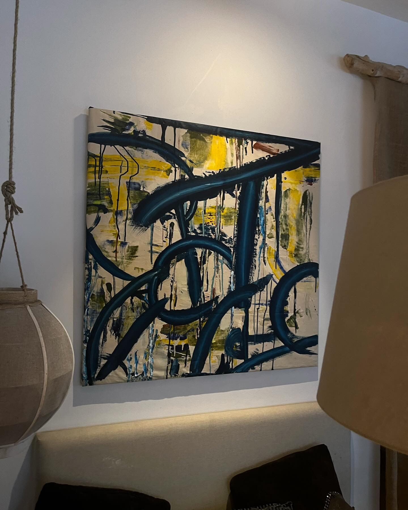
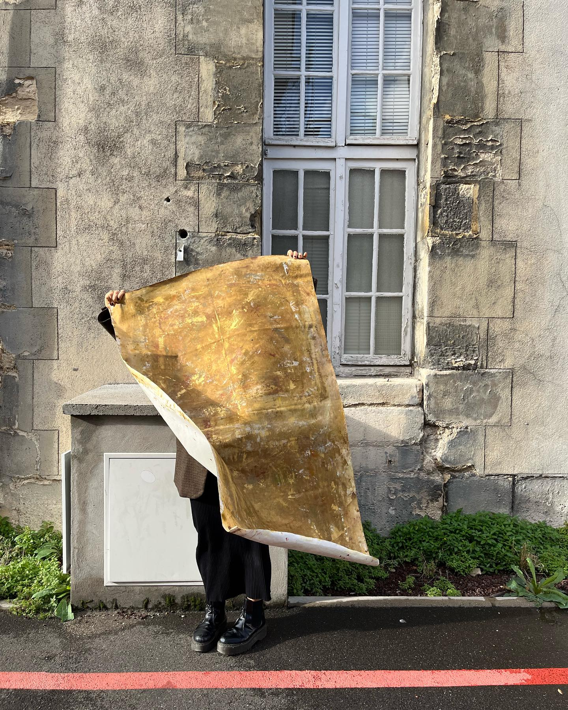
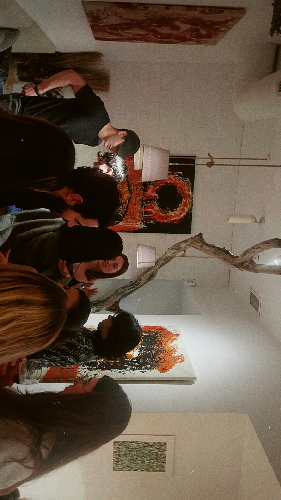

Latest Journal Entries

A Young Artist's Journey Through Three Cities
To understand how I arrived at this moment, you need to know the path that brought me here. A journey through Panama, Madrid, and Paris.
Read More
From Panama to Paris: How Geography Shaped My Artistic Voice
My journey as an abstract artist isn't a linear story—it's a series of thresholds, each one demanding I reinvent how I see light, color, and human connection.
Read More
The Refraction Collection: Breaking Light Into Meaning
Refraction became my framework for understanding everything I wanted to say about being present in the world. Explore the three phases of the collection.
Read More
Chromatic Flattening: The Technique Behind the Vision
It emerged gradually through years of experimentation, through hundreds of failures, through paying obsessive attention to what happens when saturated acrylics interact.
Read More
From Pianist to Visual Artist: How Music Shaped My Visual Language
Piano shaped how I think visually in ways I'm still discovering. Music taught me that abstract systems could communicate profound emotional content.
Read More
Color Relationships: The Language Beneath the Form
In my work, color is content. It's what the painting is actually communicating. It's a relationship between physics, psychology, and emotion.
Read More
The Role of Emotions in Abstract Expressionism
Abstract expressionism is one of the most emotionally rigorous art forms available. It demands that emotion, stripped of narrative, somehow communicate authentically.
Read More
Exploring Abstract Art Through Paris: How the City Became My Teacher
Paris has a way of making you reconsider everything you thought you knew. I moved here thinking I understood abstraction. I realized I'd barely begun.
Read More
Creating Art During the Pandemic: When the World Stopped, My Practice Started
The pandemic gave me something artists rarely have: uninterrupted studio time with zero external pressure. It turns out, that uncertainty was generative.
Read More
Show Me a Feeling: Translating Emotion Into Abstract Form
How do you make visible what exists only internally? This series emerged from asking: What if I stripped away everything except the feeling?
Read More
My Process: Fluid Pouring & Layering
A detailed walkthrough of my creative process, from conceptual development and structural mapping to the final metallic integrations.
Read More
Transcending the Everyday: How Refraction Became My Artistic Language
Refraction became a way to explore what happens in those in-between spaces. The moments before understanding arrives. The threshold where the external world meets internal experience.
Read More
The Composition of a Refraction, Explained
A deep dive into the compositional structure of the Refraction series, exploring geometry, light, and the balance between intention and the organic nature of materials.
Read More
Inside My Studio: Materials, Process, and Space
My studio is built around the idea of creating enough silence for color to speak. It becomes not a workplace, but a laboratory of perception.
Read More